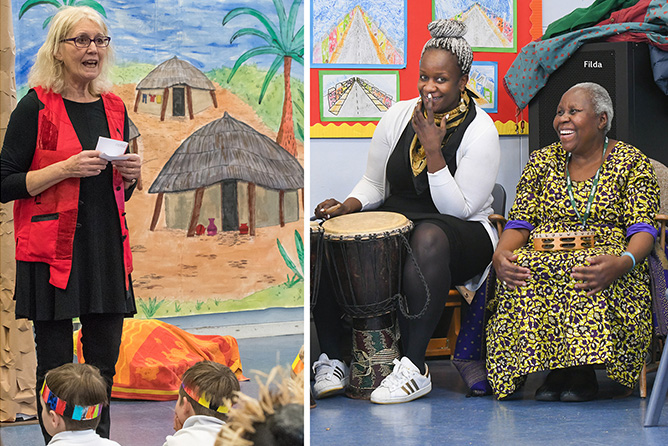

	<div id="oneCol" class="row">

        <div class="large-10 large-offset-1 end columns">
            <div class="medium-10 medium-offset-1 end columns">
                <h3>Oxford Concert Party's Kamdenge Project (2020)</h3>
                <p>In January 2020, Filda came to Kirtlington Primary School and told her own refugee story and the Ugandan Folk tale ‘Kamdenge’, a story of courage, determination, friendship, love and transformation. The children were entranced as they listened, danced, made masks and scenery and together performed the Kamdenge story to an audience. From first hearing to final performance was a collaboration of O.C.P, other artists, musicians, children and teachers for 5 weeks.</p>
            </div>
            <div class="center">
                <a href="kamdenge-01.html" title="Click for the next image in the Kamdenge series of photographs"></a>
    
                <span class="links"><a href="kamdenge-01.html">next</a></span>
            </div>
        </div>

     </div>
</div>


